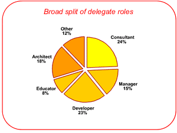

| ...75% of participants at OT2004 said they left the conference ready to put new ideas into practice at work... ...74% said they learned 'a lot', and 73% said they made important new contacts... ...82% said they found it good value for money... |
||
Convince your boss
If you'd like to come to SPA2005, but you need to convince your boss that it will be a worthwhile event, then this information might help.
What subjects did last year's conference programme cover?
The conference programme each year features around 40 sessions that have been selected from a far greater number of submissions. With such a wealth of high quality material to choose from, we're able to put together a programme that covers a broad range of subjects. This year will be no exception, but until the programme is available sometime towards the end of October / beginning of November, take a look at last year's programme.
We try to encourage session leaders to run sessions that are interactive, so you won't find many sessions where you just sit and listen! Over the years, experience and feedback from our delegates has shown that the unique style of our conference makes for a very productive learning environment.
Who attends the SPA conferences?
This graph shows the breakdown of job roles for the delegates who attended OT2004. Some delegates often perform a number of roles, so for the purposes of this illustration, we've taken what they consider to be their primary role. As you can see, our delegates covered a wide range of roles. This diversity really helps to make the conference interesting because you get to exchange ideas and experience with people with different perspectives.

Our conference attracts world class speakers.
Each year our programme has sessions led by some of the leading names in software practice from the UK and abroad. Some of these names will be very familiar to you. Others you will know through their published work. Here are just some of the names that have appeared at our conference in recent years.
Ivar Jacobson |
Martin Fowler |
Joshua Bloch |
Michael Jackson |
Dave Simmons |
Kent Beck |
Dick Gabriel |
Kevin Tyson |